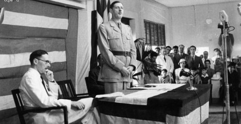
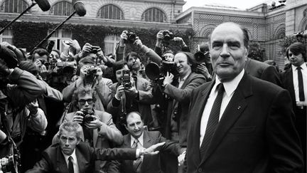
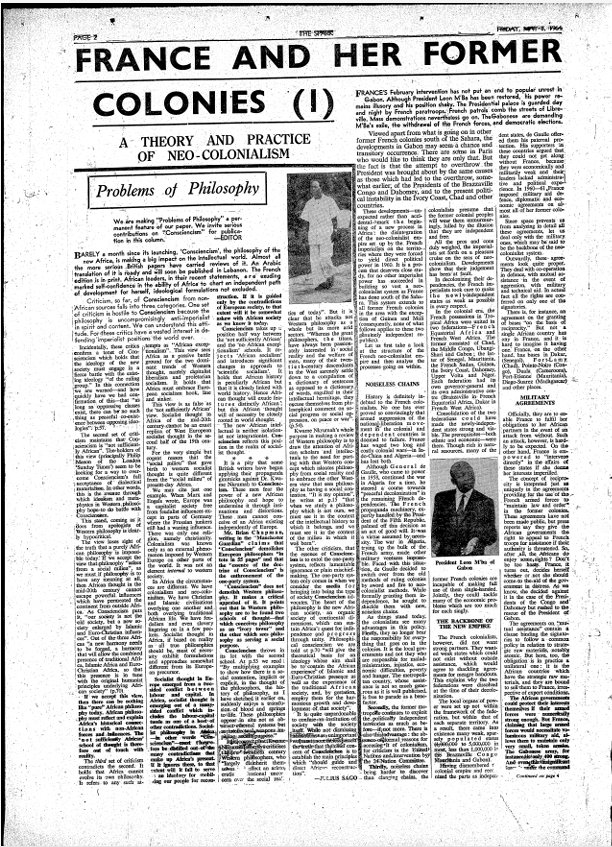
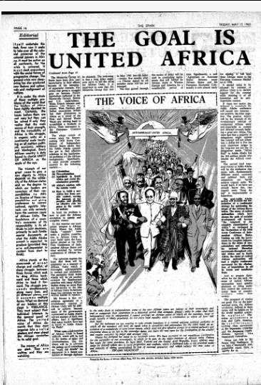

Création du néocolonialisme
Dès les décolonisations en Afrique, les nouveaux États-nations font face à un défi de taille. Tout en ayant été les victimes des desseins coloniaux, les États africains doivent désormais faire face au défi de construire leur nation. Qui plus est, la France n’est pas totalement détachée de ses ex-colonies, ce qui ajoute une couche de complexité à la période de décolonisation.
Afin de maintenir des liens privilégiés, l’Élysée fait usage d’abord des mécanismes de la coopération, qui permettent de protéger sa présence, ses intérêts en Afrique de même que son influence. Au même moment, la France s’assure de maintenir son accès privilégié aux ressources naturelles en Afrique. La relation qui se dessine prend l’allure d’une « toile d’araignée », avec, au cœur, les intérêts et l’influence de la France.
La coopération: un tremplin néocolonial
Acteurs et enjeux au cœur de la décolonisation
Les mouvements nationalistes connaissent une fulgurante ascension durant les années 1940. Ce n’est pas par hasard si la France, dès 1946, accepte d’octroyer une certaine autonomie à ses colonies. C’est devant le risque de perdre le contrôle de ses possessions coloniales que la France multiplie les politiques qui permettraient de sauvegarder son rang de grande puissance mondiale et ses intérêts.
Ultimement, grâce à la politique de coopération, la France parvient à faire l’impossible : concilier les indépendances des colonies avec les intérêts français. Parallèlement, les deux leaders nationalistes, Sékou Touré et Kwame Nkrumah sont déterminés à assister le développement des nouveaux États-nations en Afrique. En observant le risque que pose la France pour la souveraineté des pays de l’Afrique de l’Ouest, le duo postule des idéaux ayant pour objectif de contrer les promesses néocoloniales tout en promouvant le développement des pays en Afrique.
Penser une approche de décolonisation contrôlée
Une première réflexion sur le rôle de l’État français et ses colonies survient lors de la Conférence de Brazzaville de janvier-février 1944. L’objectif au cœur de la conférence est de trouver un moyen de renouveler la relation coloniale sans fracturer ses fondements. De plus, dans un contexte de Guerre froide, les États-Unis et l’URSS menacent grandement la domination de la France en Afrique française. Conséquemment, la Guerre froide motive la France afin de maintenir sa domination coloniale sur le continent. C’est dans cet état d’esprit que l’élite française réfléchit à nouveau sur la restructuration des liens coloniaux afin de réduire les coûts d’exploitation, maintenir ses intérêts et assurer le contrôle des colonies.
D’abord, dès 1932, le diplomate français Eirik Labonne publie un ouvrage sur les possibilités qui se trouvent dans les sols africains et conceptualise l’embryon du projet de la « Eurafrique ». Il avance la nécessité d’une exploitation rationnelle puisque l’Afrique est « l’avenir » de l’Europe grâce à ses ressources. François Mitterrand, alors ministre de l’outre-mer, développe encore plus loin que Labonne le concept de la « Eurafrique » dans Aux frontières de l’Union française :
Pour ce faire, et pour cimenter cette « France eurafricaine », le gouvernement devrait instituer des sortes de « protectorats » - mais « peu importe le mot », précise Mitterrand – permettant à la métropole de contrôler en souplesse ses dépendances territoriales en leur concédant une once d’autonomie interne. Paris, détaille Mitterrand, doit conserver la gestion des domaines communs essentiels : l’ « armée », la « diplomatie », la « définition de la monnaie », le « contrôle du crédit », la « possession du sous-sol », ou encore « l’occupation des zones stratégiques ».Thomas Borrel, L'Empire qui ne veut pas mourir, 2021, p.158.
Au cours de la même période, Poniatowski, dans L’avenir des pays sous-développés, se charge plutôt de convaincre sur l’urgence d’agir. Alors à la direction des Finances du protectorat du Maroc entre 1948 et 1953, Poniatowski croit que l’URSS cible les pays sous-développés avec des projets d’aide au développement. Poniatowski participe à l’élaboration des méthodes néocoloniales économiques.
En 1955, c’est au tour de Claude Cheysson, qui revient de son expérience comme conseiller des affaires indochinoises, d’avancer des solutions pour contrôler les conséquences de la décolonisation en Afrique. Selon Cheysson, les colonies doivent demeurer dans l’orbite française. Il propose d’associer les élites africaines avec la structure capitaliste française grâce à trois mécanismes : la zone franc, les fonds d’aide à la coopération et l’aide au développement. Également, Cheysson propose de former les élites dans la métropole française afin de solidifier les liens d’affaires possibles. D'autant plus que, le défi est de faire coopérer les « indigènes » avant que ceux-ci ne s’identifient trop aux mouvements nationalistes.
Appliquer une approche de décolonisation contrôlée
Après réflexion, la France passe de la parole aux actions. D’abord, afin de structurer la collaboration, elle se tourne vers les élites africaines pour créer des intermédiaires dans la relation avec l’Hexagone. Ces derniers deviennent des agents de la France. De plus, un système est élaboré pour recruter les Africains dans les grandes écoles françaises, l’objectif d’africaniser les cadres en Afrique pour remplacer les cadres français blancs. Les Africains acceptés reçoivent des bourses de 75 000 francs français avec la possibilité de suivre un perfectionnement à l’École Nationale de la France d’outre-mer (ENFOM). Ceci est d’une grande importance pour assurer la loyauté des futurs agents.
Sur le plan économique, l’Hexagone inaugure en 1945 le franc des colonies françaises d’Afrique (CFA). Selon l’économiste Ndongo Samba Sylla et la journaliste Fanny Pigeaud, la création du franc CFA vise à saisir le contrôle des colonies en utilisant les principes de surévaluation et de la parité fixe. L’année suivante, la France met en œuvre le Fonds d’investissement pour le développement économique et social (FIDES). Ce changement implique la rupture avec la loi de 1901 sur l’autonomie financière des colonies et renforce la centralisation du pouvoir de l’Hexagone en Afrique.
En 1956, la France revient à la charge, supportée par les nouvelles réflexions de ses élites et ministres. Afin d’assouplir la relation coloniale, les autorités mettent en place la loi-cadre ou loi Defferre. Cette nouvelle loi permet de maintenir la domination française tout en prévoyant d’assister à l’apprentissage démocratique et de l’autogestion des colonies. L’objectif est de permettre une plus large autonomie interne, y compris le droit de tenir des assemblées, des élections par des suffrages universels. Toutefois, la loi-cadre ne donne toujours pas l’indépendance et celle-ci sera rapidement remplacée par la constitution de 1958 qui déploie alors une nouvelle institution, la Communauté. Plus généreuse en termes d’autonomie, la France crée des « domaines de compétence de la communauté » ;une manière subtile de conserver la primauté de ses intérêts.
C’est ainsi que nous progressons dans la dernière phase importante du plan de décolonisation de la France. En poursuivant la politique de coopération, la France peut reconnaitre des droits aux nouveaux États tout en menant sa politique de solidarité et d’influence qui sont les mots d’ordre dans le pré carré africain.
Au total, entre 1959 et 1963, la France signe plus de 138 conventions sur les accords de coopération. Les accords de coopération militaire protègent la présence militaire française, les accords culturels assurent l’autorité de la France sur l’enseignement et la recherche, et les accords économiques confirment l’exploitation des richesses, la zone Franc, le franc CFA et des régimes préférentiels pour la France. Par-dessus tout, l’octroi de l’indépendance est conditionné à la signature des accords de coopération. Ainsi, la coopération n’a pas pour objectif de « modifier » la relation aussi bien que de reconduire le modèle d’échange inégal sous un nouveau couvert.
Nkrumah et Touré : un guide idéologique
L'expérience coloniale comme facteur de motivation
La période coloniale a sans aucun doute influencé la façon dont Touré et Nkrumah visualisent l’édification de leurs États respectifs. Des liens importants se tissent ici entre les actions des deux hommes et leurs prises de parole respectives, qui reflètent le refus et la contestation de l’ordre précédemment établi. À travers le combat mené par les deux hommes pour accéder à l’indépendance, une forme de radicalisation s’observe dans leurs prises de position respectives.
Dans un premier temps, dans la colonie anglaise de la Gold Coast, Kwame Nkrumah crée en 1949 le CPP (Parti de la convention du peuple), puis l’année suivante le Ghanéen encourage une campagne de désobéissance civile contre l’État colonial. Étant un acteur politique engagé, il accède au titre de Premier ministre en 1951 et négocie l’indépendance de la Gold Coast en 1957. Après avoir observé les méfaits du colonialisme qui lui ont laissé une : « impression indélébile de l’expérience de mes frères colonisés par d’autres pays », Nkrumah se positionne contre l'ordre colonial et toutes ses variantes possibles.
À cela s’ajoute le parcours d’Ahmed Sékou Touré. La route pour accéder au pouvoir dans la colonie française de Guinée est plus tumultueuse. Il débute par le poste de commis aux écritures à la Compagnie du Niger français en 1940 pour ensuite travailler comme commis aux services postaux en 1944. Son ascension politique commence en 1953, lorsqu’il devient responsable des syndicats locaux et secrétaire général du Parti Démocratique de Guinée (PDG). Lorsque Touré devient député de Guinée en 1956, il affiche ouvertement son désir pour l’indépendance immédiate et au droit de s’associer librement avec la France. Comme chez Nkrumah, l’indépendance doit être accompagnée d’une « mission » anticoloniale, c’est-à-dire prendre toutes les décisions en fonction des nouveaux intérêts de l’Afrique, et non ceux de la France :
Pour reconstruire sa civilisation saccagée, pour se guérir de la morsure profonde du colonialisme, […] l’Afrique doit répondre à l’exigence fondamentale de ses légitimes aspirations : faire la Révolution. L’Afrique doit oser et faire la Révolution pour déraciner les séquelles ostentatoires et imperceptibles de la domination étrangère ».Sékou Touré, La Négritude et la 5ème Colonne, 1971, p.183.
Toutefois, une différence s’observe : Nkrumah porte le mouvement de décolonisation en tant que l’Osagyefo (c’est-à-dire « le guide »), tandis que Touré utilise la notion de « destin », en se proclamant petit-fils de Samory Touré, une figure emblématique du combat contre le colonialisme en Afrique de l’Ouest. En procédant à sa propre héroïsation, Touré se donne une légitimité politique en s’inscrivant dans la lignée des grandes figures de la résistance anticoloniale. En conclusion, aussi bien chez Nkrumah que chez Touré, un sentiment pressant se fait ressentir :
Tel est, à n’en pas douter, l’évènement capital du XXe siècle. Ce siècle est donc devenu celui de l’émancipation coloniale, de la révolution continue qui doit aboutir à libérer toute l’Afrique du colonialisme impérialiste […] nous ne serons pas en repos tant que la dernière citadelle du colonialisme n’aura pas été abattue en Afrique ».Kwame Nkrumah, L'Afrique doit s'unir, 1963, p.9.

Si le premier organise un mouvement nationaliste et panafricaniste autour du peuple pour renverser le colonialisme, le second travaille avec acharnement pour gravir les échelons et centraliser le mouvement nationaliste autour de sa personne. Le duo adopte des positions « tranchantes » avec des idées « coupantes », c’est-à-dire des projets et idéaux diamétralement opposés au néocolonialisme. Ceci explique le choix du panafricanisme, du socialisme, d’encourager le marché local, de centraliser les pouvoirs, d’avoir une lignée de parti strict et finalement un régime autarcique. Plus précisément, les deux hommes sont attachés à assurer la souveraineté durable de l’indépendance acquise. Par voie de conséquence, le néocolonialisme est considéré comme l’un des plus grands dangers que les États africains soient confrontés. Cela explique pourquoi on s’attache, chez Touré et Nkrumah, à en débusquer les stratégies et les tactiques.
Les affiliations idéologiques: une boussole anti-néocoloniale
Afin de comprendre les affiliations idéologiques de Touré et Nkrumah, nous croyons essentiel de s’éloigner de la pensée « pyramidale », où une facette aurait préséance sur l’autre. Conséquemment, nous approchons les multiples affiliations idéologiques du duo comme des éléments qui, une fois mis ensemble, prennent l’allure d’une boussole. Toutefois, contrairement à une boussole traditionnelle avec le nord comme point de référence, celle de Touré et Nkrumah s’oriente à partir d’un objectif commun : se dresser contre le néocolonialisme et offrir une alternative viable, selon eux. C’est à partir du socialisme africain que se conçoit la boussole idéologique de Touré et de Nkrumah. Voyons maintenant de plus près trois des sept facettes qui structurent et guident la boussole du duo Touré-Nkrumah.
Premièrement, l’idée de l’unité domine chez les deux hommes. Par unité, nous faisons référence au panafricanisme comme: « idéologie et projet politique visant à la libération et à l’unification du continent africain ». Ainsi, Nkrumah insiste sur l’unité pour bâtir une nation « efficace » et assurer l'éventuel le développement économique et social du continent africain. L’unité des États africains représente le meilleur moyen d'obtenir la liberté et d'assurer le progrès du continent. Notons le caractère « défensif » de l’unité dans le discours de Nkrumah. L’unité intervient pour bâtir la nation africaine, permettre aux Africains de s’élever ensemble pour ensuite contrer le néocolonialisme.
Du côté de Touré, l’unité se situe au cœur de tous les projets tant politique, économique que militaire et culturel. En fait, pour Touré, c’est à travers l’unité que l’Afrique peut espérer retrouver son identité propre et freiner sa « dépersonnalisation ». Si Nkrumah utilise l’unité sous un angle défensif, Touré va à l’offensive : au-delà de s’élever ensemble, il sollicite l’unité afin d’attaquer les forces impérialistes.
Ensuite, la gestion des capitaux étrangers et la politique étrangère démontrent que la réflexion des deux hommes n’est pas toujours au même niveau d’acuité.Nkrumah explique en détail que l’Afrique a certainement besoin des capitaux extérieurs pour se développer. Toutefois, ce ne sont pas tous les prêts qui sont bons :
Le genre d’investissements que nous préférons est celui qui comporte une association avec le gouvernement. […] nous nous méfions beaucoup des chasseurs de fortune. […] les capitaux sont modestes et difficiles à mobiliser. Alors les capitaux étrangers sont utiles et rendent grand service, s’ils prennent la forme de prêt ou de crédit, permettant au pays qui emprunte d’acheter ce dont il a besoin là où il le désire, tout en gardant le choix des postes renfloués.Kwame Nkrumah, L'Afrique doit s'unir, 1963, p.126-127.
En plus de renforcer l’idée de centralisation, Nkrumah spécifie que la priorité sera octroyée aux capitaux étrangers qui vont permettre la prolifération du capital et éviter le mécanisme « d’import-export ». La réflexion de Touré est moins approfondie. Il mentionne toutefois qu’en fonction des moyens dont dispose chaque pays africain, l'arrimage des économies est crucial afin de devenir des pays complémentaires, et non compétiteur, dans la gestion des capitaux étrangers.
Finalement, malgré le niveau d’analyse qui diffère de Nkrumah à Touré, les deux sont en accord sur les objectifs d’une politique étrangère commune en Afrique : « l’indépendance de l’Afrique, l’unité de l’Afrique, et le maintien de la paix mondiale par une politique de neutralité positive ». Cette politique étrangère promet donc une position plus désengagée des conflits internationaux ainsi qu’une centralisation des objectifs orientée sur le continent africain, à nouveau une manière de s’éloigner du néocolonialisme qui prêche pour une centralisation européenne. En somme, il s’agit de mener une politique de non-alignement.
Le duo Touré /Nkrumah se rejoint également sur le paradigme de l’économie et la politique intérieure. À cet effet, les principes d’autarcie et du socialisme se manifestent d’abord chez Nkrumah par l’économie planifiée. Pour assurer un développement autonome, plusieurs moyens sont proposés :
c’est pour toutes ces raisons que nous avons créé l’économie obligatoire et interdit l’importation des articles que nous considérons comme facultatifs. Nous avons aussi institué une loterie nationale, augmenté les possibilités de l’épargne postale et créé une autre « caisse d’épargne » dans le cadre de notre Banque Nationale. Nous nous intéressons aux moyens d’encourager les gens à investir dans les affaires nouvelles, ce qui encouragera également l’entreprise et l’initiative, contribuant par là à former d’habiles directeurs.Kwame Nkrumah, L'Afrique doit s'unir, 1963, p.126.
Remarquons le souci, chez Nkrumah, de non seulement encourager la mise en place d’un marché commun africain, mais aussi d’encourager le développement des acteurs économiques afin de faire prospérer le pays. De plus, Nkrumah avance l’importance de s’éloigner de la monoculture tout en militant afin que les décisions de politique intérieure se fassent en fonction des intérêts du Ghana et de l’Afrique, indépendamment du « jeu des forces qui font les marchés mondiaux ». La conception nkrumaiste de l’organisation économique se base sur le socialisme, ce qui implique la nationalisation des moyens de production. Finalement, en lien avec l’unité, dans l’économie nkrumaïste est prévue la création d’une monnaie commune pour l’ensemble des États africains afin d’accélérer le développement. Tout comme Nkrumah, Touré se base sur les principes socialistes pour ériger une économie nouvelle dans laquelle l’autonomie est déterminante :
Il s’agit, dans cette conception d’un développement auto-centré, auto-entretenu et effectivement transcroissant. […] Il s’agit en somme de penser et de préconiser les voies qui s’écartent du modèle classique de développement « Centre-Périphérie », qui n’est que le modèle type « Métropole-Colonies » et qui, sur le plan politique, constitue le néo-colonialisme que nous voulons détruire à tout prix, et c’est là une tâche historique de la génération montante.Sékou Touré, Des États-Unis d'Afrique, 1980, p.111.
Pour Touré, l’éloignement du modèle colonial dicte son choix d’économie et du modèle autarcique. De plus, tout comme Nkrumah et son projet d’aménagement du fleuve Volta, Touré évoque un projet dans le domaine de l’énergie qui gravite autour de l’aménagement du fleuve Niger. Enfin, il propose également une monnaie propre et commune à l’échelle de l’Afrique ainsi qu’une nationalisation des banques gérées exclusivement par des Africains. Le duo s’appuie l’idée d’une émancipation par le développement économique.La contrainte néocoloniale sera écartée grâce à l'indépendance économique.
Conclusion
Au lendemain des indépendances, la France éprouve peu d’angoisse : après avoir mené des réflexions sur plus de vingt ans, la décolonisation n’intervient pas comme une surprise, mais une ultime opportunité afin d’établir son nouvel arsenal politique de la coopération. Il apparait évident aux yeux des historiens l’incompatibilité entre les objectifs et intérêts du duo Nkrumah et Touré avec le type de politique préconisée par la France partout en Afrique française. Kwame Nkrumah et Sékou Touré adoptent des positions tranchantes et des idées coupantes, c’est-à-dire en constante opposition aux projets néocolonialistes issus de la politique de coopération française. Leurs idéologies sont des alternatives à la menace néocoloniale.
Si la France souhaite l’unité eurafricaine, Nkrumah et Touré insistent sur l’unification africaine. Devant la mainmise de l’entreprise privée européenne en Afrique, le duo prêche pour l’autogestion des ressources. Alors que la France souhaite créer des états clientélistes pour les intégrer dans le cercle capitaliste, Nkrumah et Touré se concentrent sur une République socialiste où la centralisation des pouvoirs est déterminante.